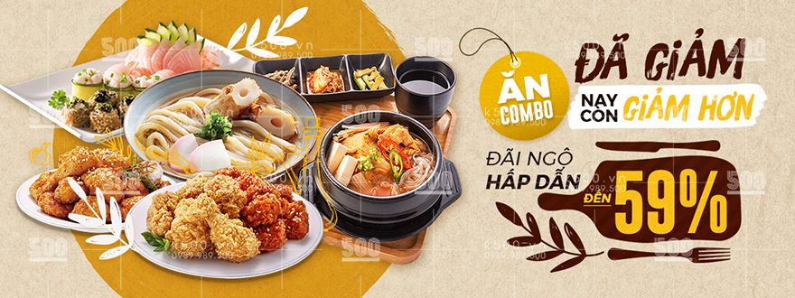

Giới Thiệu Về Website Miin Food Của Chúng Tôi
Thương Hiệu Miin Food
Thương hiệu Miin Food - Ăn Vặt Tam Kỳ được hình thành để đại diện cho những dòng sản phẩm ăn vặt đặc sản chất lượng của Tam Kỳ nói riêng và Việt Nam nói chung. Thương hiệu Miin Food mang đến sự an tâm chọn lựa cho quý khách hàng những món ngon quê hương để làm quà tặng cho người thân và gia đình. Chất lượng sản phẩm là ưu tiên hàng đầu trong tiêu chí kinh doanh của Miin Food. Chất lượng đến từ nguồn gốc sản phẩm, từ thành phần, từ gia vị an toàn, thơm ngon và từ phong cách phục vụ khách hàng. Những sản phẩm Miin Food sản xuất và phân phối bao gồm: khô gà (có khô gà lá chanh, khô gà bơ tỏi giòn rụm đặc sản, khô gà cay, khô gà không cay), khô heo cháy tỏi, khô bò (khô bò miếng, khô bò viên, khô bò que, khô bò sợi), khô cá thiều que, cá thiều miếng, khô mực cán tẩm gia vị, mực xé sợi hấp nước dừa, gạo lứt rong biển, hạt điều rang tỏi ớt, hạt điều lụa rang muối, rong biển cháy tỏi, đậu phộng tỏi ớt, đậu hà lan, bắp sấy bò lá chanh, nui sấy bò lá chanh, bim que, mít sấy, rau củ thập cẩm sấy.
